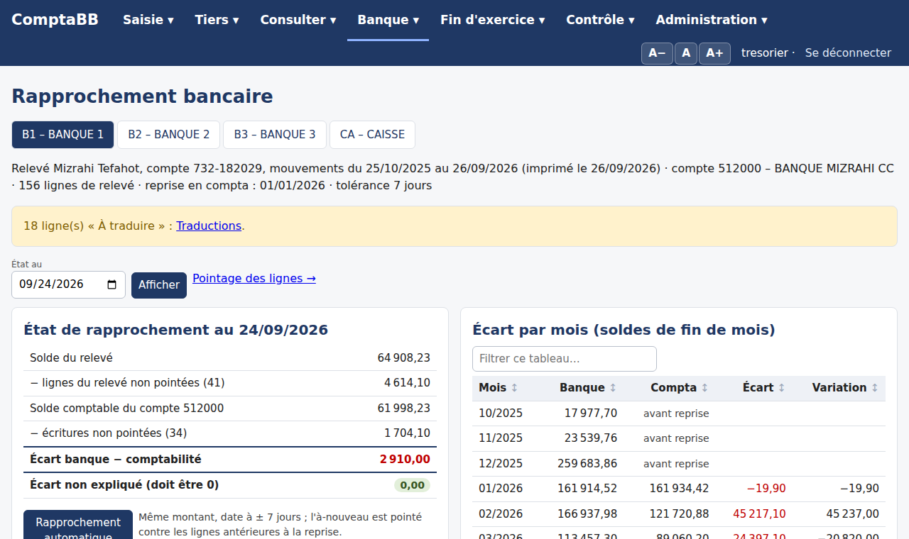
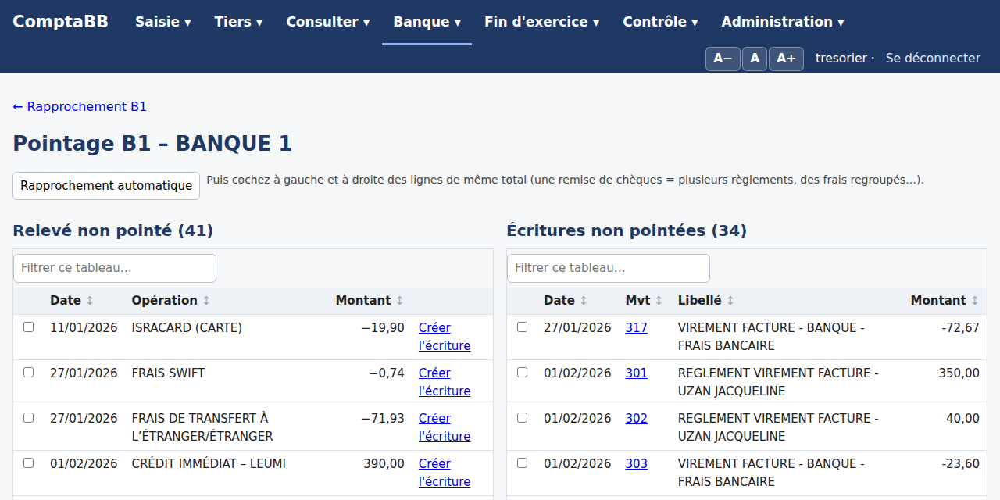

Mode d'emploi détaillé – comptabilité de la Loge Bnei Brith (₪)
Adresse : https://comptabb.pythonanywhere.com
Pour : le trésorier, les membres du bureau, le vérificateur aux comptes et les bénévoles
Version du 26/09/2026
Principe général. Une opération = un mouvement (Mvt) numéroté, équilibré (total des débits = total des crédits).
L'application génère elle-même les écritures à partir de ce que vous saisissez, contrôle tout avant d'enregistrer,
et note chaque action dans l'historique. Vous n'avez pas besoin d'être comptable pour saisir.
Saisir son identifiant et son mot de passe, puis Se connecter.
Pour quitter : Se déconnecter en haut à droite (surtout sur un ordinateur partagé).
Page de connexion.
Icône sur le Bureau
Edge : menu … › Applications › Installer ce site en tant qu'application › cocher « Créer un raccourci sur le Bureau ».
Chrome : menu ⋮ › Caster, enregistrer et partager › Installer la page en tant qu'application (ou Créer un raccourci).
Téléphone : iPhone (Safari) › Partager › Sur l'écran d'accueil ; Android (Chrome) › ⋮ › Ajouter à l'écran d'accueil.
Taille des caractères
Les boutons A−, A et A+ en haut à droite réduisent, remettent à la normale ou agrandissent toute l'application.
Le réglage est mémorisé sur l'appareil. On peut aussi utiliser Ctrl + / Ctrl − du navigateur.
Rôles
Rôle
Ce qu'il peut faire
Trésorier (administrateur)
Tout : saisie, corrections, codes, tiers, fiches, rapprochement, budget, clôture, référentiels, base de données.
Bureau
Consultation seule : tableau de bord, écritures, journaux, états, tiers, rapprochement, contrôles, historique.
Vérificateur aux comptes
Comme le bureau (consultation, contrôles, historique).
Bénévole
Seulement les fiches bénévoles qui lui sont confiées : saisie des lignes, nouveaux tiers, transmission. Aucun solde ni écriture.
Les comptes se créent par le trésorier : Saisie › Fiches bénévoles › Nouveau bénévole pour un bénévole,
Administration › Référentiels › Utilisateurs pour le bureau et le vérificateur (choisir le groupe « Bureau » ou « Vérificateur »).
2. Se repérer dans l'application
Les menus
Tableau de bord, menu « Consulter » ouvert.
Menu
Pages
Saisie
Saisie guidée · Écriture libre · Modifier une écriture · Codes et nouveaux tiers · Fiches bénévoles
Tiers
Liste des tiers · Cotisations des membres · Tiers provisoires
Consulter
Tableau de bord · Écritures · Journaux (banque, caisse…) · Grand livre · Balance · Analytique
Banque
Rapprochement · Traductions du relevé
Fin d'exercice
États annuels et budget · Clôture
Contrôle
Contrôles · Historique
Administration
Référentiels · Base de données
Passer la souris sur un menu (ou cliquer / toucher) ouvre ses pages. Le menu de la page en cours est souligné.
Listes déroulantes « cherchables »
Dans toutes les listes (comptes, tiers, codes, types d'opération…), tapez une partie du code ou du libellé :
« taieb », « 5122 », « bourse ». Choisir avec la souris, ou avec les flèches et Entrée.
Trier et filtrer les tableaux
Clic sur un en-tête de colonne : tri croissant (▲), second clic : décroissant (▼). Textes, montants et dates sont triés correctement.
« Filtrer ce tableau… » (au-dessus des tableaux de plus de 8 lignes) : ne garde que les lignes contenant le texte tapé.
Dans Écritures, le tri porte sur toutes les pages.
Imprimer, exporter
Les pages États, Journaux et Historique ont des boutons Imprimer et Télécharger en Excel.
L'impression retire automatiquement les menus.
Couleurs et conventions
Cases de saisie sur fond jaune ; montants négatifs en rouge ; ₪ partout ; dates jj/mm/aaaa.
Messages en haut de page : vert = fait, rouge = refusé (avec la raison), jaune = à vérifier.
3. Saisir une opération (saisie guidée)
Saisie › Saisie guidée. Vous décrivez l'opération ; l'application écrit les lignes comptables.
Cotisation de 400 ₪ réglée par BIT : aperçu des 4 lignes générées, contrôles OK.
Étapes
Date de l'opération (dans l'exercice ouvert).
Type d'opération : l'aide sous la case explique ce qu'il fait (voir le tableau ci-dessous).
Tiers (membre ou fournisseur) quand le type en demande un : la liste ne propose que les tiers du bon type.
Montant en ₪ (toujours positif).
Moyen de paiement : Mizrahi compte courant, Mizrahi épargne, BIT, Caisse, ou « Non réglé » (facture seule).
Vers (virement interne seulement) : le compte qui reçoit.
Événement / projet (axe 2) : obligatoire.
Compte : seulement si différent de celui du type (ex. compte de charge pour une dépense directe).
Libellé facultatif (sinon il est composé automatiquement) ; Remboursement pour une opération inverse.
Aperçu et contrôles : vérifier les lignes, puis Enregistrer. Le mouvement créé s'affiche.
Types d'opérations
Type
Écritures
Cotisation, manifestation, recette d'opération, don d'un membre
Facture au membre (411) contre le produit (7xx) ; si un moyen de paiement est choisi, règlement dans le même mouvement.
Règlement d'un membre
Encaissement d'une facture déjà passée.
Don reçu (sans tiers), subvention, intérêts
Banque ou caisse contre le produit.
Dépense directe, frais bancaires
Charge (6xx) contre banque ou caisse.
Facture fournisseur / règlement fournisseur
Charge contre fournisseur (401), puis paiement.
Virement interne
Deux mouvements via le compte 580000 (compte qui paie → 580000 → compte qui reçoit).
Paiement carte Isracard
Charge contre 580000 (journal OD), puis prélèvement 580000 contre la banque.
Contrôles avant enregistrement
Date dans l'exercice ouvert, type choisi, montant positif, tiers du bon type, moyen de paiement si obligatoire,
virement vers un autre compte, code axe 2, compte de la bonne classe, écritures complètes et équilibrées, doublon
(même date, libellé et montant : cocher « ce n'est pas un doublon » si c'est voulu).
4. Écriture libre, modifier ou annuler une écriture
Ouvrir un mouvement
Cliquer sur un n° Mvt (Écritures, Journaux, Grand livre…). La page montre les lignes, le lettrage, le pointage bancaire et les commentaires.
Un mouvement et ses boutons de correction (trésorier).
Modifier
Saisie › Modifier une écriture : taper le n° de mouvement puis Rappeler l'écriture (ou bouton Modifier sur le mouvement). Changer comptes, libellés, montants, axe 2, date ou journal ; ajouter une ligne (« + Ajouter une ligne ») ou en supprimer (case Suppr.).
Le total débit / crédit s'affiche en direct : le mouvement doit rester équilibré.
Indiquer le motif (obligatoire), puis Enregistrer.
Modification d'un mouvement : totaux en direct, motif obligatoire.
Refusé dans un exercice clos.
Une ligne dont le compte ou le montant change est dépointée du relevé et délettrée.
Le motif, l'avant et l'après sont gardés dans le mouvement et dans l'Historique.
Écriture libre
Saisie › Écriture libre : saisir un mouvement ligne par ligne (opération diverse, reclassement),
avec journal, date et objet. Mêmes contrôles (équilibre, exercice ouvert).
5. Codes analytiques et nouveaux tiers
Saisie › Codes et nouveaux tiers.
Nouveau code, nouveau tiers, statut d'un code, préfixes.
Nouveau code analytique
Choisir le préfixe (ex. MAN. = manifestations, SOC. = social) : le tableau de droite montre le prochain code.
Saisir seulement le libellé ; le code est proposé automatiquement (ex. MAN.013).
Statut (axe 2) : 0 Non affecté, 1 En cours, 2 Terminé.
Nouveau tiers
Choisir le type (Membre, Fournisseur…), le nom, et si possible l'adresse, le code postal, la ville, le téléphone, l'e-mail.
Le compte est proposé d'après le type et le nom : 411COHEN001 pour un membre, 401TRAIT001 pour un fournisseur.
Statut d'un code axe 2
Choisir le code et le nouveau statut ; si le code est déjà utilisé dans des écritures, cocher la confirmation.
Tiers › Liste des tiers : membres, fournisseurs et autres types. Filtrer par type ou statut, rechercher (nom, compte, ville, e-mail).
La colonne Solde indique ce que le tiers doit (positif) ou ce qui lui est dû (négatif).
Liste des tiers.
Fiche d'un tiers
Cliquer sur le nom : facturé, réglé, solde dû, historique des écritures.
Modifier la fiche (en bas) : type, coordonnées, adresse ; pour un membre : statut, date d'adhésion, cotisation attendue.
Fiche d'un membre.
Importer un fichier Tiers.xlsx
Télécharger le modèle : lien « Télécharger le modèle Tiers.xlsx » (en bas de la liste des tiers) ; le remplir (une ligne par tiers).
Colonnes reconnues : Compte, Type, Nom, Prénom, Adresse, Code postal (CP), Ville, Téléphone (Tél), E-mail (Mail), Date d'adhésion, Statut, Cotisation. Seul le Nom est obligatoire.
Importer : un compte rendu indique les tiers créés, mis à jour, et les lignes en erreur.
Un tiers déjà présent (même compte, ou même type + nom + prénom) est mis à jour, jamais en double.
Une cellule vide n'efface rien. Rien n'est supprimé.
Ce que doit un tiers
Pas de suivi séparé des impayés : le solde du compte tiers suffit (colonne Solde de Tiers › Liste des tiers, triable, et fiche du tiers).
Cotisations
Tiers › Cotisations des membres : pour l'exercice choisi, attendues (cotisation des membres actifs), facturées, reçues, reste dû et taux de recouvrement.
Lettrage
Le lettrage relie une facture et son règlement (même code : A, B…), ce qui permet de voir ce qui reste dû.
Automatique : bouton Lettrer automatiquement (liste des tiers) ou Lettrage automatique (fiche).
Manuel : dans la fiche, cocher des lignes dont le débit égale le crédit, puis Lettrer la sélection. Le × à côté d'une lettre annule ce lettrage.
7. Fiches bénévoles
Les bénévoles notent en ligne les recettes et dépenses d'une activité ; le trésorier complète et reporte en comptabilité.
Le trésorier prépare
Saisie › Fiches bénévoles › Nouveau bénévole : choisir le membre dans la liste des fiches tiers (un bénévole est toujours un membre ; s'il est absent, créer d'abord sa fiche, type Membre), puis identifiant et mot de passe à lui transmettre.
Nouvelle fiche : type Activité (fixer d'avance le code axe 2 de l'activité : le choisir dans la liste, ou le créer en indiquant le préfixe et le libellé, numéro attribué automatiquement) ou Gestion (dons et aides reçus ou versés) ; choisir les bénévoles.
Liste des fiches avec leurs totaux.
Le bénévole saisit
Il se connecte : il ne voit que ses fiches.
Pour chaque ligne : Recette ou Dépense, date, membre ou tiers (taper le nom), nombre de personnes, nature, montant, mode de paiement, justificatif, remarque.
Un tiers absent de la liste : remplir « Nouveau tiers » (nom, prénom) : il est provisoire ; ou « Autre payeur ou bénéficiaire » pour une personne extérieure.
La colonne Contrôle signale ce qui manque ; les totaux (participants, recettes, dépenses, résultat) sont en haut.
Quand c'est fini : Transmettre au trésorier (la fiche n'est plus modifiable par les bénévoles).
Ce que voit un bénévole.
Le trésorier complète et reporte
Tiers › Tiers provisoires : rattacher chaque nouveau tiers à un compte existant, ou laisser vide et choisir le type pour créer son compte.
Fiche Gestion : pour chaque ligne (Modifier), choisir le mode de paiement (virement Mizrahi, virement BIT, espèces), le compte de contrepartie (proposé selon la nature) et le code axe 2.
Reporter en comptabilité : un mouvement par ligne. Refusé tant qu'une ligne est signalée ; les lignes reportées sont verrouillées.
Rouvrir aux bénévoles pour qu'ils ajoutent des lignes.
Fiche vue par le trésorier : colonnes Compte et Contrôle.
8. Consulter
Tableau de bord
Produits, charges, résultat, trésorerie par compte, état des contrôles, résultat par activité (axe 1) et par événement (axe 2), sur la période choisie (Du / Au).
Écritures
Toutes les lignes, filtrées par période, journal, compte (début de numéro ou choix dans la liste), code axe 2 ou texte. Tri par colonne sur toutes les pages.
Écritures triées par débit décroissant.
Journaux (banque, caisse…)
Consulter › Journaux : choisir le journal et la période.
Banque et caisse (B1, B2, B3, CA) : date, Mvt, pièce, libellé, contrepartie, recette, dépense, solde progressif, soldes de début et de fin.
Autres journaux (VT, HA, OD, AN) : écritures par mouvement avec totaux.
Imprimer ou Télécharger en Excel.
Journal de la banque Mizrahi avec solde progressif.
Grand livre, balance, analytique
Grand livre : un compte, ses lignes et son solde cumulé.
Balance : chaque compte avec débit, crédit et solde ; clic sur un compte = son grand livre.
Analytique : produits, charges et résultat par code d'axe 1 et d'axe 2.
9. Rapprochement bancaire
Banque › Rapprochement : un onglet par compte (B1, B2, B3, caisse).

État de rapprochement et écart par mois.
1. Importer le relevé
En bas de page : choisir le fichier (PDF Mizrahi en hébreu, Excel ou CSV) puis Importer. Les lignes déjà importées sont ignorées :
on peut réimporter un relevé qui chevauche le précédent. Au premier import d'un compte, le solde d'ouverture est déduit du relevé.
2. Traduire les opérations
Les lignes « À traduire » : Banque › Traductions du relevé, saisir la traduction française de chaque libellé hébreu. Elles servent ensuite pour tous les relevés.
3. Pointer
Rapprochement automatique : même montant, date à ± 7 jours ; l'à-nouveau est pointé contre le solde d'ouverture.
Pointage manuel (« Pointage des lignes ») : cocher à gauche (relevé) et à droite (écritures) des lignes de même total
— par exemple une remise de chèques contre plusieurs règlements — puis Pointer la sélection. Dépointer annule un rapprochement.
Créer l'écriture sur une ligne du relevé sans écriture (frais, intérêts…) : la saisie s'ouvre pré-remplie et l'écriture est pointée à l'enregistrement.

Pointage manuel : les totaux sélectionnés doivent être égaux.
4. Lire l'état
À la date choisie : solde du relevé, solde comptable, lignes non pointées des deux côtés, écart non expliqué (doit être 0), et écart par mois.
10. États annuels et budget
Fin d'exercice › États annuels et budget : choisir l'exercice ; comparaison automatique avec l'exercice précédent.
Compte de résultat N et N-1.
Compte de résultat par compte (charges, produits, résultat, variation).
Résultat par axe 1 et par axe 2.
Bilan simplifié : actif et passif (classes 1 à 5), résultat de l'exercice ; indique « équilibré ».
Budget : ajouter des lignes (charges ou produits ; par compte, code d'axe 1 ou d'axe 2) ; le tableau compare budget et réalisé (écart et %).
Imprimer et Télécharger en Excel (toutes les feuilles).
11. Clôture de l'exercice
Fin d'exercice › Clôture (trésorier). À faire une fois l'exercice terminé et vérifié.
Aperçu de la clôture : contrôles et à-nouveaux prévus.
Lire les points bloquants (mouvement déséquilibré, bilan déséquilibré, exercice précédent non clos) et les points à vérifier (contrôles, fiches non reportées, tiers provisoires).
Vérifier les états et faire une sauvegarde (Administration › Base de données) et la télécharger.
Choisir le code axe 2 des à-nouveaux, cocher la confirmation, Clôturer l'exercice.
La clôture crée un mouvement d'à-nouveaux (journal AN) au 1er jour de l'exercice suivant : soldes des comptes de bilan et résultat affecté au compte 110000.
Elle crée l'exercice suivant si besoin, verrouille l'exercice clos et enregistre une archive Excel figée (téléchargeable). Aucune écriture existante n'est modifiée.
La clôture est définitive. Une erreur découverte ensuite se corrige dans l'exercice ouvert (écriture libre).
12. Contrôles et historique
Contrôles
Contrôle › Contrôles : règles vérifiées en permanence (mouvements équilibrés, un débit OU un crédit par ligne, comptes et codes existants,
aucune écriture nouvelle dans un exercice clos, comptes de liaison 580000 et 470000). L'état général apparaît aussi sur le tableau de bord.
Page des contrôles.
Historique
Contrôle › Historique : toutes les actions (qui, quand, quoi, avant, après). Recherche, Télécharger en Excel.
C'est la piste d'audit du vérificateur. Le trésorier peut effacer l'historique jusqu'à une date (taper EFFACER) : une copie Excel et une sauvegarde sont faites avant, et une ligne garde la trace de l'effacement.
13. Administration
Référentiels
Administration › Référentiels (trésorier) : plan comptable, journaux, codes analytiques, préfixes, exercices, réglages
(comptes 580000 et 470000, tolérance du rapprochement, compte des cotisations…), modèles d'opérations, moyens de paiement, types de tiers,
natures et modes des fiches bénévoles, traductions, utilisateurs (mots de passe, groupes).
Cliquer sur une ligne, modifier, Enregistrer. Les écritures ne se modifient pas ici (voir chapitre 4).
Paramètres (Excel) : le fichier Parametres.xlsx
Administration › Paramètres (Excel) — administrateur et trésorier seulement. Tous les paramètres
(réglages, codes axe 1 et axe 2, préfixes, plan comptable hors tiers, journaux, types de tiers, moyens de paiement, modèles d'opération,
natures et modes des fiches, relevés, traductions) tiennent dans un classeur, une feuille par sujet.
Par le dossier Imports (ComptaBB sur le PC) : Préparer Imports/Parametres.xlsx, le modifier dans Excel, l'enregistrer
et le fermer, puis Importer Imports/Parametres.xlsx.
Par le navigateur (site hébergé) : Télécharger Parametres.xlsx, le modifier, puis l'envoyer avec Importer le fichier.
Une ligne dont la clé (colonne grise) existe est mise à jour ; une clé nouvelle est créée ; une cellule vide ne change rien ;
rien n'est supprimé (Actif = Non pour retirer).
Au moindre problème, rien n'est enregistré et la liste des lignes à corriger s'affiche. Une sauvegarde est faite avant chaque import,
et chaque changement est inscrit dans l'Historique.
Dossiers Imports et Exports
Seuls l'administrateur et le trésorier échangent des fichiers avec ComptaBB (Parametres.xlsx, Tiers.xlsx) ; pour les autres utilisateurs,
l'application ne dépend d'aucun fichier. Le dossier Exports contient :
Sauvegardes : les copies de la base (30 dernières) ;
Archives : les classeurs de clôture et les copies d'historique effacé ;
la dernière copie de Parametres.xlsx téléchargée, et les anciennes versions remplacées ;
les exports complets (Export_complet_….zip).
Sur le PC, Imports et Exports sont à côté de ComptaBB ; sur PythonAnywhere, dans comptabb-data (ils survivent aux mises à jour).
Base de données
Sauvegardes et remise à zéro.
Tout exporter (export complet, en une seule opération) : crée dans Exports un fichier Export_complet_….zip avec
la sauvegarde de la base, Parametres.xlsx, Tiers.xlsx, Donnees.xlsx (écritures, exercices, relevés, pointages, budget,
fiches bénévoles, historique), les états de chaque exercice et un fichier de contrôle. Les 20 derniers sont gardés ; téléchargez-les
(liste « Exports complets ») pour les ranger sur le PC ou OneDrive.
Faire un test sans risque : 1. Tout exporter ; 2. faire les essais voulus (saisies, clôture…) ;
3. Remettre à zéro et recharger en choisissant l'export complet (taper REMPLACER). La comptabilité est vidée puis rechargée
depuis les fichiers Excel de l'export, et l'application vérifie que tout est identique à l'export (nombres, totaux et contenu
cellule par cellule). Au moindre écart, rien n'est modifié. Les comptes utilisateurs sont gardés.
Créer une sauvegarde / Télécharger la base maintenant : copie complète ; à faire chaque mois et avant une clôture, et à ranger sur le PC ou OneDrive.
Remettre à zéro et recharger (taper REMPLACER) depuis :
une sauvegarde .sqlite3 : tout redevient comme à ce moment-là (utilisateurs compris) ;
un export complet .zip : la comptabilité est rechargée depuis ses fichiers Excel puis contrôlée (voir ci-dessus) ;
le classeur ComptaBB.xlsm : plan, journaux, codes, écritures, exercices, relevé Banque 1 ; les utilisateurs sont gardés ; les tiers sont recréés d'après les comptes (coordonnées à réimporter avec Tiers.xlsx), les fiches bénévoles, budgets, pointages et lettrages sont à refaire.
Une sauvegarde de la base actuelle est faite juste avant.
Archives Excel : archives de clôture et copies d'historique effacé.
Sauvegarde automatique chaque nuit
Sur PythonAnywhere, onglet Tasks (lien), créer une tâche quotidienne avec la commande :
Les 30 dernières sauvegardes sont gardées, dans comptabb-data/Exports/Sauvegardes.
14. Mises à jour, problèmes fréquents, glossaire
Mettre l'application à jour
Suivre le protocole de mise à jour (PDF séparé) : télécharger le ZIP depuis GitHub, l'envoyer dans Files sur PythonAnywhere,
taper bash ~/maj.sh dans une console, puis Ctrl+F5 sur une page de ComptaBB. En cas de problème : bash ~/maj.sh --retour.
Problèmes fréquents
Situation
Que faire
Mot de passe oublié (site)
Un administrateur le change dans Référentiels › Utilisateurs ; ou en console : python manage.py changepassword Tresorier.
« Date dans un exercice clos »
Choisir une date de l'exercice ouvert ; pour corriger le passé, passer une écriture libre dans l'exercice ouvert.
« Déjà enregistrée ? »
Une opération identique existe ; si c'est voulu, cocher « ce n'est pas un doublon ».
Un tiers n'apparaît pas dans la liste de la saisie
Le type d'opération attend un autre type de tiers (membre / fournisseur), ou le tiers n'existe pas : le créer (Codes et nouveaux tiers).
Report d'une fiche refusé
Lire la colonne Contrôle : tiers provisoire sans compte, mode ou axe 2 manquant (Gestion)…
Écart de rapprochement
Lignes non pointées : pointer à la main, créer l'écriture manquante, ou corriger l'écriture (montant, date).
Caractères trop petits
Boutons A+ en haut à droite, ou Ctrl + dans le navigateur.
La page n'a pas changé après une mise à jour
Ctrl+F5 sur une page de ComptaBB (pas sur PythonAnywhere).
Le site ne répond plus (offre gratuite)
PythonAnywhere › Web › Run until 3 months from today (tous les 3 mois).
Glossaire
Terme
Sens
Mouvement (Mvt)
Une opération comptable équilibrée, numérotée ; regroupe plusieurs lignes.
Pièce
Numéro de pièce justificative, attribué automatiquement.
Journal
B1 Mizrahi CC, B2 Mizrahi épargne, B3 BIT, CA caisse, VT ventes, HA achats, OD opérations diverses, AN à-nouveaux.
Axe 1 / axe 2
Axe 1 : nature (découle du compte). Axe 2 : événement ou projet (choisi à la saisie).
Tiers
Membre (411…), fournisseur (401…) ou autre type ; chacun a son compte et sa fiche.
Lettrage
Lien entre une facture et son règlement sur le compte d'un tiers.
Pointage
Lien entre une ligne du relevé bancaire et une écriture.
À-nouveaux
Soldes reportés au début de l'exercice suivant par la clôture.
580000 / 470000
Compte de virements internes et paiements Isracard / compte d'attente.